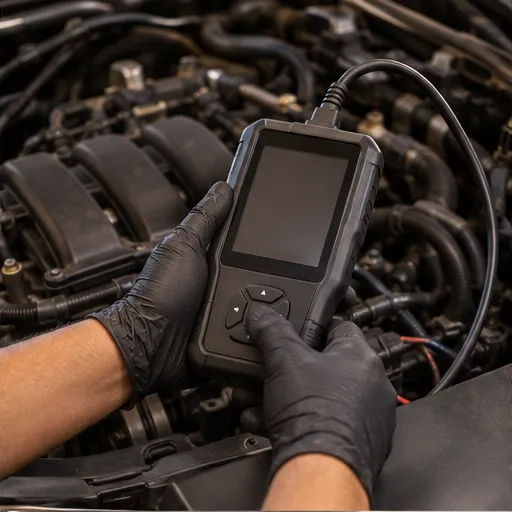
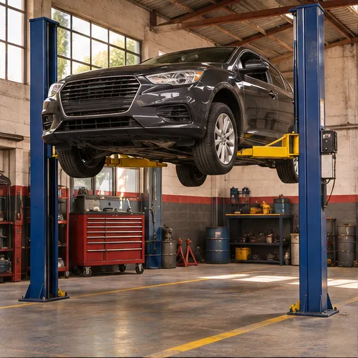
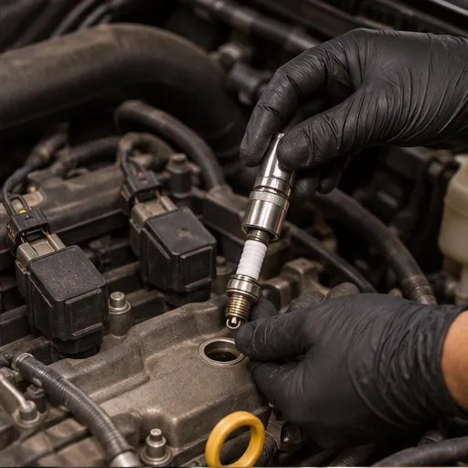
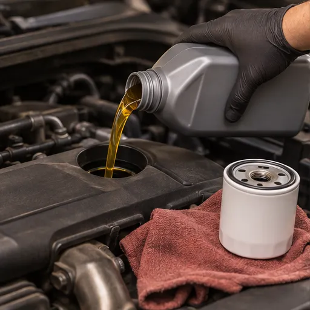
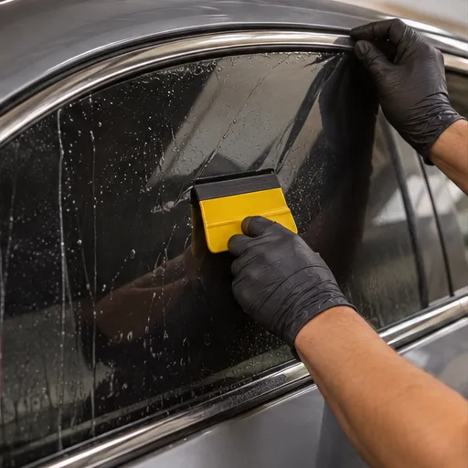
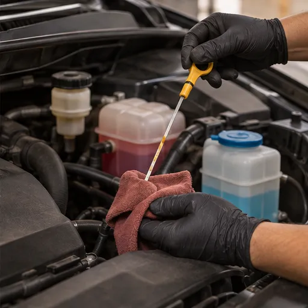

Diagnóstico y reparación general
Consulta el diagnóstico y la reparación general que necesita tu vehículo. Escríbenos para revisar tu caso y agendar tu visita.
Consultar este servicioAfinación y mantenimiento para tu vehículo
Afinación, cambio de aceite y revisión general. Escríbenos para consultar tu servicio y agendar una visita.
Agenda tu servicioSitio de demostración

En Taller El Moreno puedes consultar servicios de diagnóstico y reparación general, afinación, mantenimiento, cambio de aceite y filtros, polarizado y revisión general de tu vehículo.

Consulta el diagnóstico y la reparación general que necesita tu vehículo. Escríbenos para revisar tu caso y agendar tu visita.
Consultar este servicio
Dale seguimiento al cuidado de tu vehículo con nuestros servicios de afinación y mantenimiento. Consulta por WhatsApp el servicio que necesitas.
Consultar este servicio
Programa el cambio de aceite y filtros de tu vehículo. Contáctanos para consultar el servicio y acordar tu visita.
Consultar este servicio
Consulta nuestro servicio de polarizado automotriz. Escríbenos para recibir información y agendar tu visita.
Consultar este servicio
Agenda una revisión general del vehículo. Consulta con el taller los puntos a revisar y el servicio adecuado para tu auto.
Consultar este servicioTaller mecánico automotriz en Monterrey, Nuevo León.
Lunes, Martes, Miércoles, Jueves, Viernes · 10:00–18:00